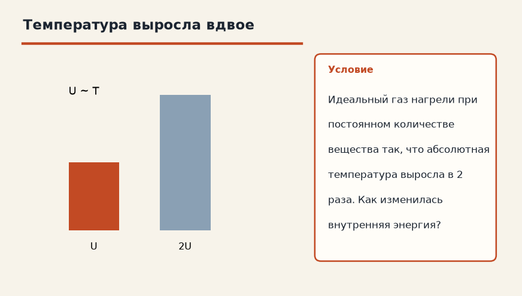
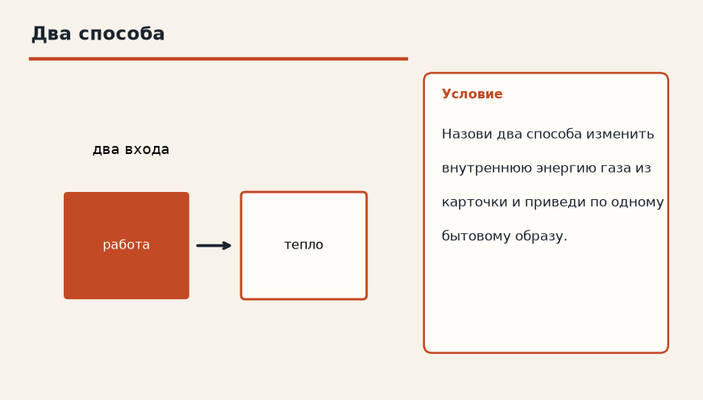

Термодинамика · Термодинамические процессы · 3.1
Внутренняя энергия
Лист для письменной работы: данные, перевод в СИ, искомая величина, ход решения, ответ. Ответов на листе нет.
1. Температура выросла вдвое
Идеальный газ нагрели при постоянном количестве вещества так, что абсолютная температура выросла в 2 раза. Как изменилась внутренняя энергия?

2. Два способа
Назови два способа изменить внутреннюю энергию газа из карточки и приведи по одному бытовому образу.

3. Температура в 1,5 раза
Количество вещества одноатомного идеального газа не меняли, абсолютную температуру увеличили в 1,5 раза. Как изменилась внутренняя энергия?
4. Постоянная температура
Идеальный газ расширили при постоянной температуре. Как изменилась его внутренняя энергия?
5. Три способа не путать
Назовите два способа изменить внутреннюю энергию газа.
6. Одноатомный газ
Какая формула связывает U одноатомного идеального газа с температурой?
7. Уменьшение T
Абсолютную температуру уменьшили в 4 раза, ν не меняли. Как изменилась U?